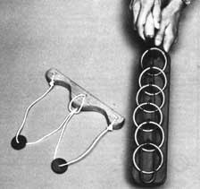
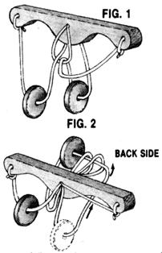

During the holiday season, many people take a step back to their childhoods and return to the family rites of yesteryear . . . with special foods and decorations, time-honored outings and ceremonies, and characteristic music and dance. And more and more folks these days are reviving the custom of exchanging simple, sturdy handcrafted items, rather than purchasing a passel of playthings that are readymade and, all too often, very readily destroyed.
Well, one traditional toy that never seems to lose its charm is the folk puzzle. These homemade brain teasers require generous amounts of ingenuity to solve-making them a challenge to old and young alike-yet call for very little in the way of funds or materials for their construction.
The following two puzzles have provided our family and friends with countless hours of enjoyment (and frustration!) over the years. The Camel and the Needle is perplexing but simple enough to give you a chance to sharpen your wits before daring to take on the Ring Thing (known to some as "the world's cussedest puzzle"). You'll find that both games offer plenty of indoor diversion for a winter's evening. And because they're so easy (and inexpensive) to cobble together, you might even consider making a few extras to give as stocking stuffers.
THE CAMEL AND THE NEEDLE
This puzzle-named after the scriptural comparison of a rich man's chances of getting into heaven with the ability of a camel to pass through the eye of a needle-is one of the oldest of all folk puzzles. (You may also know it by the moniker of Ox Yoke or Washer-and-Loop Puzzle.) Even at today's prices, you can make this toy for less than a dollar, and it'll take you no more than five minutes to construct it. I consider that a small cost for a puzzle that will furnish you with many hours of fun!
The "needle" in the puzzle is a stick of scrap wood . . . the "eye" consists of three holes in the wood, through which a cord is passed and tied . . . and the "camel" is a washer, a nut, or any similar circular object that can be threaded onto the string.
To make the Camel and the Needle, choose a slender board (I used a section of 3/4" oak) that measures about 9" in length, and drill a 1/4"- or 3/8"-diameter hole in the center of that slat. Next, bore two more holes of the same diameter, each approximately 1" from either end of the board. All the holes should be small enough to prevent the camel from passing through them but large enough to allow a heavy cord or piece of material to move through freely.
Once the holes are drilled, you'll need to locate a suitable length of cord. I've found that a 3' strand works well. The thicker it is, the better, as long as it passes easily through the openings. To attach the cord, feed both ends through the center hole, then drop them through the loop produced and snug up the knot you've just formed.
Now slip the camel of your choosing over one of the two loose ends of cord and then secure that strand to the appropriate end hole, using a couple of half hitches. Repeat this procedure with another camel, tying the remaining free cord to the hole at the other end of the board (see photo). The result will be a plank with two large loops hanging from it.
To work the puzzle, move one washer or nut past the knot in the middle so that both camels are in the same loop . . . and do so without untying the knots or cutting the cord. You may not think so at first, but the Camel and the Needle can be solved legitimately and quickly. (HINT: Since the camels cannot pass through the hole in the middle, you must find a way to pass one of them through the center knot itself.)
The average time for cracking the puzzle (not counting those folks who give up altogether) is 47 minutes. You should congratulate yourself if you can do it faster than that . . . and if you solve the puzzle in less than 15 minutes, you're definitely ready to graduate to the Ring Thing.
THE RING THING
Some years ago (or so the story goes) a repentant prisoner serving a life sentence begged repeatedly for a second chance to "go straight," but the warden regularly turned a deaf ear to his plea. Then one day the official had a sudden change of heart and offered parole to the inmate on the following condition: The convict had to invent a puzzle so tough that no one connected with the prison or in the local community could solve it. However, the puzzle had to have an honest solution.
So the convict went to work, spending every free minute racking his brain for an idea for the world's most difficult brain teaser. Months passed, with only frustration to show for his efforts. But finally, the prisoner asked permission to visit the warden. Laying the Ring Thing on the official's desk, the convict challenged him to solve it.
For days the warden struggled with the puzzle, but to no avail: He was truly stumped. The official then asked the prison guards, the inmates, the leaders of the local community-everyone, in fact, who might possess the intelligence, persistence, and patience to solve the puzzle-for help. At the end of three months, however, the Ring Thing remained unsolved . . . and the clever prisoner then walked out of the compound a free man.
Although the veracity of that story may be a matter for discussion, it's clear that-regardless of how the puzzle came into being-this toy is one of the toughest brain teasers ever loosed on a human mind. On the surface, the Ring Thing is a very simple puzzle (after all, it consists only of six metal rings, a bent coat hanger, six bent nails, and a small piece of scrap lumber), yet it takes remarkable wit to solve the brain teaser in less than four hours.
To make the game, cut a 1/2"- to 3/4"- thick board (I used a slab of birchwood) to measure 2-1/2" X 20", and shape a handle in one end. Then, measuring in about 5" from the end of the handle, drill a hole that's approximately 1/4" in diameter (you want it small enough that nailheads won't be able to pass through), and continue to bore five more holes of the same size at 1-3/4" intervals.
Next, pass a 20d nail up through each hole from the underside of the board, so that you end up with six skyward-pointing spikes. Now head to the hardware store and purchase six metal harness rings with an inside diameter of 2". Then, with loops in hand, position the puzzle so that the handle end is closest to you. Next, using Vise-Grips or a similar tool, bend the point of the closest nail so that it wraps loosely around the first metal loop. (You can heat the nail to a cherry red temperature with an oxyacetylene or Mapp gas torch for easier bending.) When properly secured, the ring should rotate easily and should encircle the next nail (see photo). Repeat this procedure for the following ring and nail, making certain, as you attach it, that the third nail rests inside the second ring. Continue securing the rings in this manner until all the loops are in place (the last circle, obviously, will not overlap a second nail).
You're now ready to insert the wire into the puzzle. Any 3' strand of stiff 1/8" wire-such as a straightened coat hanger or electrical wireworks well for this task. Once you've made sure that all six rings are properly attached and positioned so that they "point" away from the handle of the board, thread the wire through the rings to the right of the nails, inserting the strand under the near side and over the far side of each loop (see photo). When you reach the last ring, curve the wire and thread it back through the rings, mirroring the first threading sequence, but this time to the left side of the nails.
To complete the Ring Thing, bend, weld, or otherwise connect the two ends of the wire so that you've formed an elongated oval. If you like, you can add a handle to the wire to dress up the toy.
Now set the game across your knees, thus allowing the nails to hang freely, and-using both hands-work the puzzle. The trick, of course, is to remove the wire from the puzzle without unfastening the rings or the wire. (HINT: Once you've freed the wire from the first loop-he one farthest from the handle-pull the wire toward the handle so that it hooks on the first nail: Now, slip the second ring through the wire, then bring the wire forward again and slip the first ring through. You'll have to repeat this sequence many times to arrive at the solution.) There are over 50 moves before the puzzle is solved, after which you can use the techniques you've just learned to reposition the wire.
Good luck!
EDITOR'S NOTE: Stumped? Well-if you must-see the sidebar for the solutions to the puz. zles. But don't peek until you've exhausted al, other strategies (short of dismantling the pieces), because-after all-the fun is in finding the solution!
Have you given up already? Well, here are the solutions. . . if you really think you need them.
THE CAMEL AND THE NEEDLE
To work this puzzle, turn it so that the center loop runs behind the two center strands, and pull down on the loop to enlarge it. Now, move the right ring up through the center loop and then behind it, as shown in Fig. 1. Next, feed the entire center loop through the center hole.
On the back side of the puzzle, feed the ring through two loops (see Fig. 2), then pull the center loop back through the center hole. Now, pull the ring back through the center loop. Both rings should hang on the left loop. Follow this same sequence to put the puzzle in its original form.
THE RING THING
Explaining how to solve this puzzle is almost as difficult as working the brain teaser! Although each step of the solution is given here, you may want to attempt to figure it out on your own after you understand the basic technique.
Set the puzzle so it straddles your knees, with the handle on your right knee. From left to right, then, mentally number the rings and nails 1 through 6 (from here on, the rings and nails will be referred to as R1, N2, etc.).
Pull the wire to the right so that it snugs against N1, thus freeing R1. Next, push the wire back slightly and under the left-hand side of R2. Tilt R2 and "drop" it through the wire. Then push the wire to the left and drop R1 through. When you pull the wire to the right, it will be hooked on N3, with R1, R2, and R3 free. Now, push the wire slightly left and drop R4 through. By this time, you'll notice a sequence emerging: To drop and free a ring and the nail it's attached to, the wire must be hooked around the receding nail. Therefore, to free N3, you need to go back and hook the wire around N2 .To do so, push the wire through R3 and over the tops of R2 and R1. Now "pick up" R1 (by pulling it back up through the wire and setting it in its original position), then do the same to R2. The puzzle should now look as it did at the start-with one side of the rings over the wire and the other side under the wire-except that R4 is free, with both sides under the wire. Then drop R1, so that the wire hooks on N2. This enables you to drop R3. Next, go back over R1 and pick it up; then drop R2. Then drop R1 . . . and pull the wire to the right. You should be hooked on N5, which puts you in position to drop R6. Congratulations. . . you've just completed, in essence, the first "step" by removing R6. Your objective now is to remove R5 (by hooking on N4) . . . then remove R4 (by hooking on N3). . . and so on.
To hook on N4, go forward (again, always over the rings) and pick up R1. Then pick up R2, drop R1, and pick up R3. Go back and pick up R1, drop R2, then drop R1. You should be hooked on N3, so you can pick up R4. To get rid of N3, pick up R1 and R2, drop R1, drop R3, pick up R1, drop R2, and drop R1. You're now hooked on N4, so drop R5.
With that done, pick up RI and R2, drop R1, and pick up R3. Go forward again and pick up R1, drop R2, and drop R1. You're hooked on N3, so drop R4. Now, pick up R1 and R2, drop R1, and drop R3. Then simply pick up R1, drop R2, and drop R1 . . . and you're off! (Now, that wasn't so hard, was it?)
To get the puzzle back together, use the same general technique. You'll need to hook around N5 so you can pickup R6, then hook on N4 to pick up R5, and so on.
|
 |
 |
|